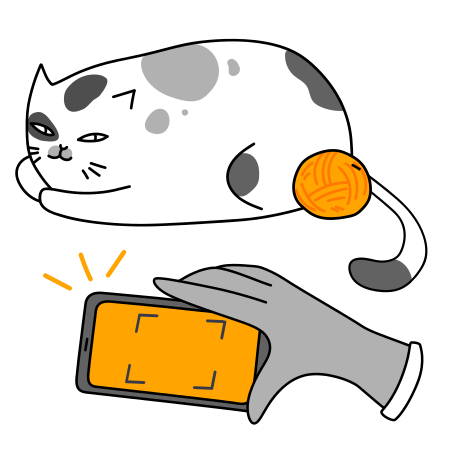

Coucou ! Mon nom est Melvil ! Tu veux m’adopter ?
- Localisation : Lancieux
- Département : Côtes d'Armor
- Prix : Free
- Sexe : Mâle
- Âge : 10 ans
- Vaccins : Oui
- Maladies : Non
- Environnement : Intérieur/Extérieur

Informations complémentaires :
Minou est un chat timide et craintif aux premiers abords, mais qui une fois la confiance instaurée est très câlin. Aucun problème avec les enfants à condition de ne pas lui faire mal. S’aventure parfois dehors (actuellement dans une maison) mais jamais très longtemps
Informations réglementaires :
- Seuls les animaux identifiés et âgés de plus de huit semaines peuvent être donnés ;
- Le donneur doit également fournir un certificat vétérinaire au nouveau propriétaire ;
- L'annonce doit clairement indiquer la notion "GRATUIT";
- Le donneur certifie avoir l'âge légal en accord avec les lois de son pays;